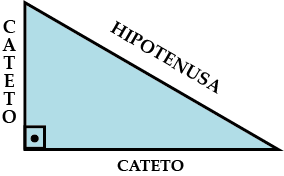
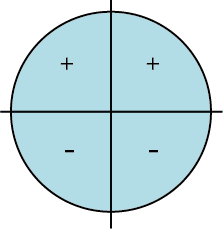
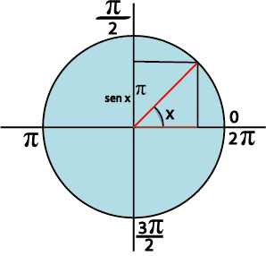
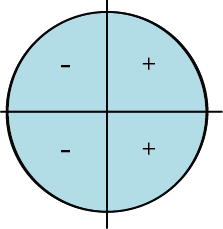
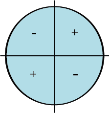
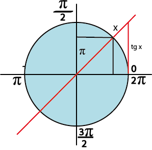
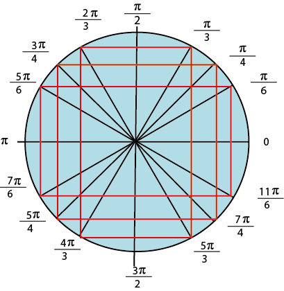
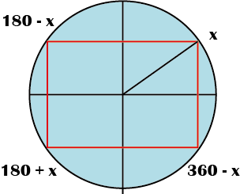
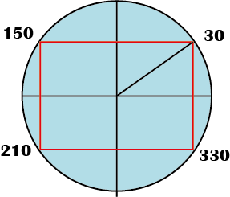

A trigonometria é a parte da matemática que estuda as relações existentes entre os lados e os ângulos do triângulo. Ela é utilizada também em outras áreas de estudo como física, química, biologia, geografia, astronomia, medicina, engenharia, dentre outras.
São as funções relacionadas aos triângulos retângulos, que possuem um ângulo de 90 graus. São elas: Seno, Cosseno e Tangente. As funções trigonométricas estão baseadas nas razões existentes entre dois lados do triângulo em função de um ângulo. Elas são formadas por dois catetos (oposto e adjacente) e uma hipotenusa que também é o maior lado do triângulo
OBS: A hipotenusa é o maior lado do triângulo, os outros lados damos o nome de catetos. Existe o cateto oposto (aquele que fica na frente do ângulo) e o adjacente (aquele que se localiza ao lado do ângulo) como se pode observar na imagem acima.
A função seno é uma função periódica e seu período é 2π. Ela é expressa por: função f(x) = sen x No círculo trigonométrico, o sinal da função seno é positivo quando x pertence ao primeiro e segundo quadrantes.Já no terceiro e quarto quadrantes, o sinal é negativo.
Além disso, no primeiro e quarto quadrantes a função f é crescente. Já no segundo e terceiro quadrantes a função f é decrescente. O domínio e o contradomínio da função seno são iguais a R. Ou seja, ela está definida para todos os valores reais: Dom(sen)=R.
Já o conjunto da imagem da função seno corresponde ao intervalo real [-1, 1]. O gráfico da função seno f(x) = sen x é uma curva chamada de senóide:
A função cosseno é uma função periódica e seu período é 2π. Ela é expressa por: função f(x) = cos x. No círculo trigonométrico, o sinal da função cosseno é positivo quando x pertence ao primeiro e quarto quadrantes. Já no segundo e terceiro quadrantes, o sinal é negativo.
Além disso, no primeiro e segundo quadrantes a função f é decrescente. Já no terceiro e quarto quadrantes a função f é crescente. O domínio e o contradomínio da função cosseno são iguais a R. Ou seja, ela está definida para todos os valores reais: Dom(cos)=R.
Já o conjunto da imagem da função cosseno corresponde ao intervalo real [-1, 1]. Em relação à simetria, a função cosseno é uma função par: cos(-x) = cos(x). O gráfico da função cosseno f(x) = cos x é uma curva chamada de cossenóide:
A função tangente é uma função periódica e seu período é π. Ela é expressa por: função f(x) = tg x No círculo trigonométrico, o sinal da função tangente é positivo quando x pertence ao primeiro e terceiro quadrantes. Já no segundo e quarto quadrantes, o sinal é negativo.
Além disso, a função f definida por f(x) = tg x é sempre crescente em todos os quadrantes do círculo trigonométrico.
Já o conjunto da imagem da função tangente corresponde a R, ou seja, o conjunto dos números reais. O gráfico da função tangente f(x) = tg x é uma curva chamada de tangente:
Círculo Trigonométrico
Simetria
 